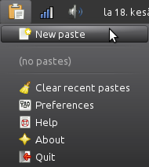

PasteTray is a tool for using online pastebins. If you have a lot of text to send to somebody and you don't want to send it in a file you can use an online pastebin. Just paste your text there, click the paste button and share the link. Or better yet, use an online pastebin with PasteTray. This is especially useful for programmers.

These pastebins are supported by default. You can also use them without PasteTray. Just click the link.
Writing custom pastebin scripts in Python is also possible.
To run PasteTray, you need to install gi with GTK+ 3, Python 3 with PIP and git if you don't already have them installed. You can also install AppIndicator3 for gi if you want to have an indicator instead of a tray icon. Most GNU/Linux distributions come with a lot of these installed, and you can make sure everything is installed on Debian-based distributions (such Ubuntu and Linux Mint) by running this on a terminal.
sudo apt-get install git python3-{gi,pip} gir1.2-{gtk-3.0,appindicator3-0.1}
When you have everything installed you can download and install
PasteTray. This will install it user-wide, so everything will be inside
your home directory. The / in the end of the PIP command is important,
it tells PIP that pastetray is a directory.
git clone https://github.com/Akuli/pastetray python3 -m pip install --user pastetray/
Then you can run it like this. A tray icon should appear in your system tray.
.local/bin/pastetray &
Uninstalling is easy:
python3 -m pip uninstall pastetray
I'll make distribution packages (at least a Debian package) of PasteTray later to make installing and running it easier.
PasteTray comes with no warranty. See LICENSE.
I'm Akuli and I have written most of PasteTray, but I want to thank these people for helping me with it: